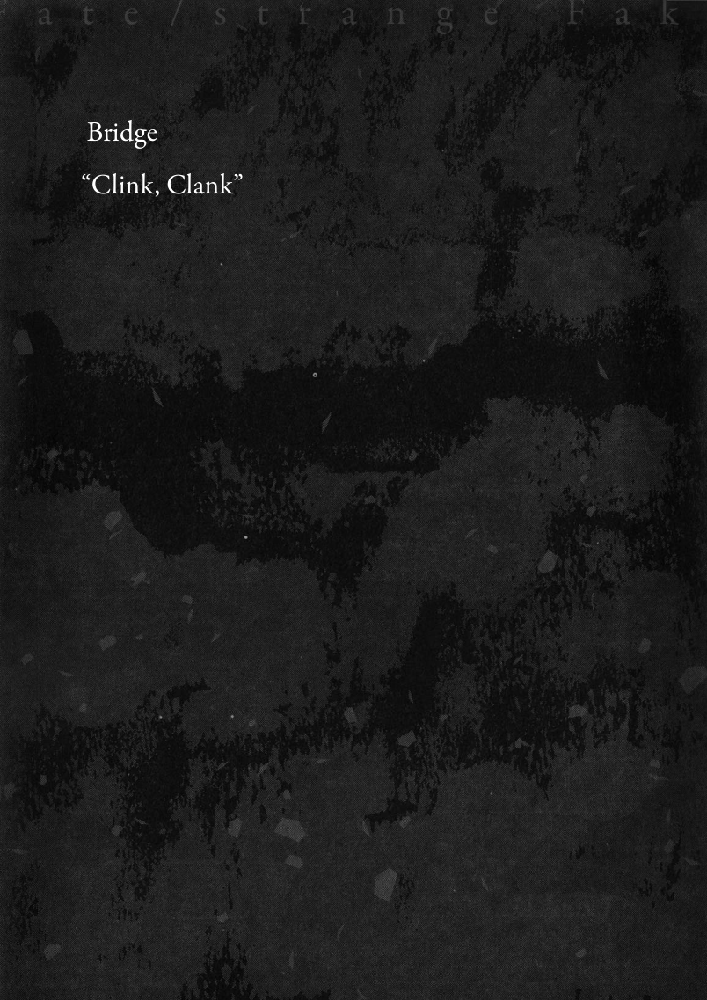
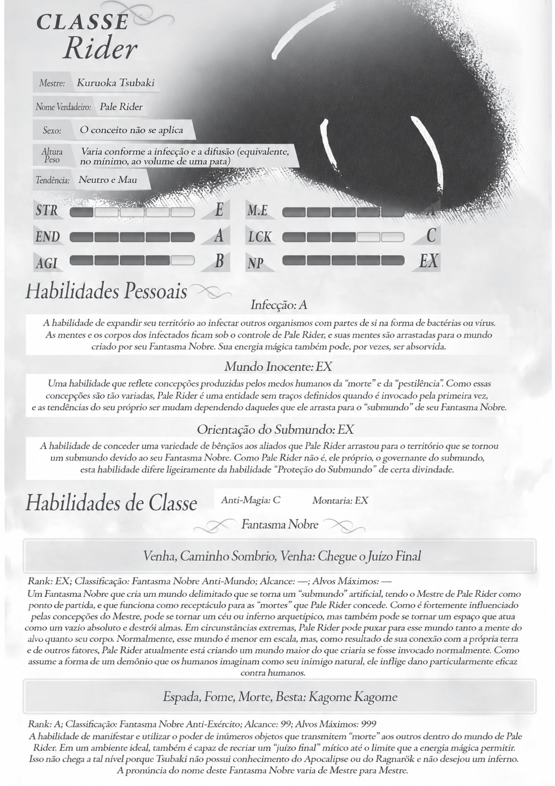
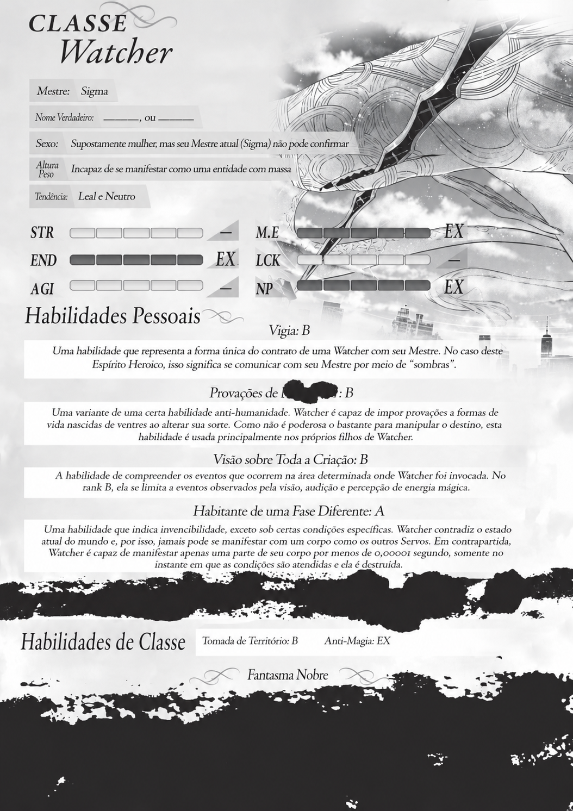

Clink Clank
". . . Hã?" Quando Ayaka percebeu, estava no meio de um cruzamento. Era o cruzamento em frente a Crystal Hill, perto do hospital e da delegacia. O asfalto ali perto estava todo esburacado, e, ao longe, ela conseguia ver bloqueios indicando a proibição de passagem, além de viaturas policiais e veículos de obra estacionados para ocultar a rua.
Perto dela, policiais olhavam em volta tão perdidos quanto ela. Não conseguia ver o Saber, que tinha ido lutar a uma distância considerável, mas pelo menos a esfera de água flutuando ao seu redor ainda estava ali.
"Nós voltamos. . . ?"
Centro Correcional Especial Colesman
"Oh . . .? Então eles voltaram inteiros. Ainda bem que mandei isolar a rua", disse Faldeus, com um dar de ombros, enquanto assistia às imagens pelas câmeras de vigilância espalhadas pela cidade e informava sua assistente de confiança, Aludra.
"Bem, tivemos um dia atrás do outro para acabar com os nervos, mas faltam só mais alguns. Está na hora de começarmos a arranjar as coisas para valer. . . ."
"O que vem primeiro?" Faldeus respondeu com um sorriso torto e uma piscadela.
"Por ora, vamos arranjar um remédio para o estômago."
Cruzamento Central
"Oh! Ali! É ela, Jack! Aquela garota é a Mestre do Saber!" Flat se animou ao encontrar Ayaka. "Aproxime-se com cautela", advertiu Jack, ainda em forma de relógio de pulso. "Você viu o poder do Saber. Não duraremos nem um segundo se ela acabar sendo hostil."
"É verdade, mas eu simplesmente não consigo parar de pensar naquela Mestre. . . . Já sei. Jack, dá para você virar uma bandeira branca?"
"Eu consegui virar um relógio graças à teoria dos objetos inanimados, mas nunca ouvi ninguém sugerir que Jack, o Estripador, na verdade fosse uma bandeira branca."
"Se procurar direitinho, tem! Eu sei que tem! As possibilidades humanas ficam meio perto do infinito, então você deve ter umas cinco mil identidades verdadeiras!"
"Isso é consideravelmente menos do que infinito. . . ." Essa troca habitual ajudou Jack a sentir que ele e seu Mestre realmente tinham voltado ao mundo original.
"Mas", Jack voltou a dizer a Flat, sem deixar de vigiar o entorno para poder protegê-lo caso um mago ou um Servo atacasse enquanto se aproximavam da Mestre do Saber, "duvido que eu vá ser muito útil em combate de agora em diante. O arqueiro diante do hospital roubou meu Fantasma Nobre, e ele não foi o único Espírito Heroico a mostrar o quão grande é a diferença entre as nossas capacidades."
"Não esquenta. Eu te falei: se a gente pensar nisso como hard mode, dá para contornar a diferença de stats de algum jeito."
". . . Suponho que eu deva ficar grato por você ter se preocupado comigo antes de se preocupar consigo mesmo quando aquela Assassin o interrogou sobre o Santo Graal."
"Como assim?!" exclamou Flat, com os olhos brilhando. "Eu também quero descobrir quem Jack, o Estripador, foi de verdade, sabia!"
". . . Você pode acabar apenas se decepcionando", prosseguiu Jack. "Há uma boa chance de que eu seja só algum lixo humano que, por acaso, nunca foi pego. . . . De todo modo, pare de me idealizar. Quando minha identidade enfim vier à tona, tudo o que eu vou ganhar é o direito de expiar meus crimes. Descobrir minha verdadeira identidade seria salvação para mim, mas não expiação. E, para começo de conversa, não faz bem idealizar um criminoso."
Depois de terminar de dar sua bronca em Flat, o tom de Jack se suavizou. "Mas . . . os dias que passo assim com você . . . o que ficar na sua memória será, sem dúvida alguma, 'eu'. Se eu resolver a questão da minha identidade com o poder do Santo Graal, muito provavelmente vou desaparecer, e esse Jack genuíno vai aparecer diante de você. Se tentarem matá-lo, não pense duas vezes. Mate-o ou fuja dele imediatamente e esqueça-o assim que puder."
"Jack. . . ." "Mas . . . eu ficaria grato se você se lembrasse do 'eu' que está falando com você agora."
Jack falou como se fossem suas últimas palavras. Ele devia estar convencido de que lhe seria difícil vencer as batalhas que ainda viriam.
Flat se virou para ele com o sorriso de sempre. "Eu penso do mesmo jeito. Seja qual for a sua identidade de verdade, isso é outra questão. Para mim, Jack é o Jack com quem eu estou falando agora. Se alguém mandasse você expiar o crime de assassinato, eu testemunharia a seu favor! Eu diria: 'Este Jack é um falso genuíno; ele não precisa expiar nada!'"
". . . Hehe . . . Ha ha ha! Você conseguiu inverter isso de todas as formas possíveis!" Jack caiu na gargalhada. O jovem mago nada parecido com um mago e o serial killer riram juntos, despreocupados. Andaram com passos leves, como se não tivessem medo de nada, e decidiram entrar em contato imediatamente com a garota que era a Mestre do Saber.
"Oi, Ayaka!" "Hã?! Quem é você?!" Ayaka se virou na direção da saudação repentina e viu um rapaz no fim da adolescência, talvez quase com vinte anos, parado ali e acenando para ela.
"Como você sabe o meu nome. . . ?" "Oh, então você realmente não é a mesma pessoa", disse o rapaz, vendo a reação cautelosa de Ayaka. "Faz sentido. Quero dizer, o fluxo da sua Energia Mágica é totalmente diferente! Mas então seu nome também é Ayaka mesmo?"
"Hã . . . ?" Ayaka encarou o rapaz, confusa. "Quem é você?! Você sabe alguma coisa sobre mim?" "Eu sou o Flat. Prazer. Tem outra garota com o mesmo nome e o mesmo rosto que você, e eu sou amigo dela. Mas . . . essas correntes de Energia Mágica. Era isso mesmo. . . ."
O rapaz olhou para Ayaka e começou a murmurar alguma coisa para si mesmo. "Espera", pediu Ayaka, recuando nervosamente. "Me conta! Se você sabe sobre mim, se sabe quem é Ayaka Sajou, então me diz. . . !" Flat respondeu ao estranho apelo dela com um aceno. Ele parecia sério. "Claro. . . . Entendi. Como eu pensava, você não sabe de verdade o que você é, sabe?" ". . ." Ayaka se calou.
Flat tomou isso como um sim e começou a dizer alguma coisa para confortá-la.
"O seu corpo, veja—"
Primeiro veio o assobio de algo cortando o ar.
No instante seguinte, assim que o vermelho que desabrochou no torso do jovem que se chamava Flat tingiu o campo de visão de Ayaka, veio o estampido do asfalto se despedaçando.
"Hã?" O som tinha saído de Ayaka ou de Flat? Flat caiu de joelhos ali mesmo. ". . . Flat?" A voz de Jack ecoou pelo local. Ele vinha desconfiando da maga chamada Ayaka. Também estava alerta para ataques vindos do Saber e de outros Espíritos Heroicos. Tanto Flat quanto Jack confiavam nos policiais próximos, seus aliados, mas ainda assim aquele era o primeiro contato deles com o Saber.
Mas Flat fora perfurado por um ataque de longa distância que não dependia de Energia Mágica e que vinha de uma facção que não tinha nada a ver com o Saber.
Jack, tendo perdido a maior parte de sua força, não tinha como defender seu Mestre de um tipo de guerra moderna como aquele.
"Ah . . ." Ao olhar para o buraco aberto em seu abdômen, Flat conseguiu analisar com total calma que provavelmente tinham atirado nele na diagonal, de cima para baixo, do telhado de um prédio.
Ergueu a cabeça para olhar. "Está tão claro. . . . Não consigo ver direito", murmurou Flat, levando uma das mãos ao rosto por puro reflexo, como se nada estivesse fora do normal. O sol, que já começava a descer em direção ao oeste, estava bem nos seus olhos.
"Desculpa, Jack. . . . Eu vacilei." Achou que conseguia ouvir Jack gritar. Sentiu-o tentando se transformar em algo extraordinário e fazer alguma coisa na direção de onde o tiro tinha vindo.
Mas Flat sabia. Provavelmente já era tarde demais. Sua visão reforçada tinha percebido múltiplos atiradores posicionados em prédios em várias direções.
". . . Desculpa, Professor." Então, com um sorriso ligeiramente solitário, ele disse suas últimas palavras.
"Desculpem . . . todo mundo . . ."
Um segundo assobio agudo passou diante de Ayaka, e outra flor vermelha desabrochou.
Ela floresceu cerca de um metro acima da primeira. Em outras palavras, onde a cabeça do jovem que se chamava Flat estava. "Iiih . . . Ah . . ." Não era a primeira vez que Ayaka via alguém morrer bem diante dos seus olhos. Mas era a primeira vez que via a cabeça de alguém que estava sorrindo e falando com ela até poucos segundos antes simplesmente desaparecer.
Enquanto Ayaka Sajou gritava, o corpo de Flat Escardos desabou no mar de vermelho que derramara.
Em Algum Lugar
"O que foi, Svin?" O jovem interrogado pelo mago que caminhava ao seu lado fez uma cara confusa, fungou algumas vezes e então falou com uma inquietação que nem ele conseguia explicar.
"Não. Só tive a sensação de que . . . um cheiro que estava por toda parte sumiu. . . ."
Centro Correcional Especial Colesman
"Confirmada a destruição da cabeça do alvo. Iniciando ataque adicional." "Ótimo. Não hesitem em destruir o Brasão Mágico dele também. Ele pertence à decrépita família Escardos."
Faldeus tomou um gole de chá preto e conferiu os monitores enquanto ouvia os relatórios pelo rádio. Os disparos adicionais faziam o cadáver do jovem estirado sobre o asfalto dançar. Ao contrário de Rohngall, não era um boneco, mas um corpo de verdade. "Sabe, eu acho que o tipo de gente mais perigoso de todos é o que inspira os outros", disse Faldeus a Aludra, com toda a elegância, enquanto levava o chá aos lábios.
"Neste caso, eu vinha tendo cuidado com Flat e com Saber, que não param de arranjar novos aliados. Se existir a menor chance de que os dois tenham feito contato dentro do mundo do mundo-barreira, precisamos eliminá-los imediatamente, ou quem vai morrer é o meu estômago."
"Então a Mestre do Saber também?" "Se desse, seria depois do Flat . . . ou era esse o plano, mas isso já não é mais uma opção." A garota que era a Mestre do Saber já estava cercada por uma cúpula de Energia Mágica parecida com água, e o Saber, que correra para o lado dela, agora a carregava nos braços para dentro de um prédio.
"Também tenho interesse em descobrir a identidade dessa Mestre. Vamos investigar um pouco antes de eliminá-la." "Isto é o seu 'remédio para o estômago'?" perguntou Aludra, bem quando os disparos nos monitores finalmente cessaram e o som do rádio morreu.
"Sim, exatamente isso", respondeu Faldeus, com um dar de ombros e um sorriso.
"A melhor cura para o estresse é eliminar cada uma de suas causas."
Justo quando Faldeus ia terminar o último gole de chá, um dos monitores diante dele ficou escuro.
". . .?" No mesmo instante em que percebeu que era a câmera que mostrava o cadáver de Flat Escardos, recebeu uma transmissão de rádio da equipe de atiradores.
". . . Responda, por favor. Aqui é o Spade. . . . om . . . ard!" "O que houve? Aconteceu alguma coi—" Quando tentou responder, o rádio morreu.
Então outro monitor, que vigiava o cruzamento central, ficou escuro. ". . .!" Faldeus decidiu, de imediato, que aquilo era um ataque e mudou automaticamente para a comunicação mística com as equipes espalhadas pela área, mas . . .
"O que é isso?! Que porra é essa?!" "Atirem logo!" "Ah . . . Não dá." "Merda! Por que isso. . ." "É um monstro!" "Atira nisso! Anda, mata essa coisa!" "Não . . . Por quê. . ." "Um mago . . .?" "Para! Pa . . . Aaaagaaaaaah!" "Me aju . . . Gah . . . Bwah . . ." "Não é hu . . . Aaah!"
Os monitores continuaram se apagando um após o outro, e os gritos da equipe de atiradores seguiram ecoando, como se estivessem em harmonia.
Pouco depois, uma equipe que monitorava a situação a certa distância entrou em contato. "Aqui é o Jackal! Faldeus! Que diabos é aquela coisa?! Você nunca nos falou disso. . . . Você disse que Flat Escardos era um mago! Que diabos está acontecendo?!"
"Por favor, se acalmem! Um monstro . . .? Pode ser o Servo do Flat transformado. Ele deve ficar sem Energia Mágica e se dissipar em breve. Mantenham suas posições!"
"Não! Alguma coisa que parecia um Espírito Heroico realmente se transformou, mas depois desapareceu, exatamente como você disse! Aquela coisa é outra . . . Merda! Ah, ah, aquilo não é humano, e também não é mago! Que diabos é aquilo?! Que se dane hematófagos e Espíritos Heroicos! Aquilo é um m . . . m-m . . . maaararaarabyah de verdade!"
Ao som de um coro de gritos e de ruídos de algo sendo dobrado, a linha emudeceu.
E não parou por aí. Um após o outro, os sistemas de vigilância que Faldeus instalara por toda Snowfield foram ficando cegos.
Em questão de poucas dezenas de segundos, todas as câmeras de vigilância de Snowfield tinham parado de funcionar.
Diante daquela situação, Faldeus deixou a xícara cair. Nem chegou a ouvir o estilhaçar no chão quando murmurou:
"Que diabos está acontecendo. . . ?"
Em Algum Lugar de Mônaco
"Entendo. . . . Então Flat Escardos chegou ao fim." Aquele homem, dono de certo cassino e que até pouco tempo antes vinha conversando com Flat por telefone, ergueu um brinde silencioso a alguém que já havia desaparecido do mundo havia muito tempo.
"Dou minha bênção ao grande feito do meu velho vizinho, Messara Escardos.
"Entretanto . . . se o que você obteve ao custo de um jovem que ainda tinha futuro foi 'o passado', então eu certamente não considero isso motivo de celebração."
Clink, clink, clink. Quando percebi que aquele era o som que acompanhava o fim de tudo, pensei: ah, então começou.
Logo entendi o que era aquele tilintar. Era o som das cápsulas vazias ejetadas pelos rifles de precisão que puseram fim a Flat Escardos caindo do alto dos prédios até o chão.
Era um som que tombava dezenas de metros pelo ar até enfim chegar ao lado da carne que havia sido Flat Escardos.
"Eu" esperei por muito, muito tempo. Finalmente chegara a hora de "eu", que nascera com o único propósito de "existir", ter significado. Ah, é mesmo. "Eu" preciso me mover. "Eu" preciso avançar para a próxima fase. Eu já entendo. Entendo o que devo realizar. O propósito supremo e final que me foi concedido pela família Escardos. O propósito para o qual nasci. Não é mesmo, Flat?
Ah, sim. Acabou. Chegou ao fim. Eu caí em ruína. Eu cheguei. Estou completo. A perda sempre foi a peça final.
Seguindo os princípios do meu nascimento, eu me reiniciei.
Recalculei o dever que me foi confiado. Meu caminho será difícil ou fácil? Não adiantava especular. Em qualquer caso, eu não tinha escolha a não ser levá-lo até o fim. Nada mais me daria significado. Continuar a existir. Continuar a existir. Só preciso me tornar um verdadeiro humano e continuar a existir neste mundo.
Sim, eu prometo a você, Flat. Vou continuar a existir neste mundo também pela sua parte.
Mesmo que isso signifique . . . varrer da face da Terra a espécie definida como "humanos".
Torre do Relógio
"Merda. . . . Ainda não consigo falar com ele. . . ." Em uma ala da Torre do Relógio, na sala de preparação da Escola de Magia Moderna, Lord El-Melloi II murmurava com impaciência enquanto fazia chamada atrás de chamada no celular.
Desde que a última ligação deles fora abruptamente interrompida entre gritos e o que parecia ser o desabamento de um prédio, ele não conseguira mais entrar em contato com Flat de jeito nenhum.
"Será que tento ligar para o chefe de polícia em vez disso . . .? Não, eu não sei o número pessoal dele. . . . Duvido que eu consiga alcançá-lo ligando para as delegacias, mas . . ."
Pousou as mãos sobre a mesa e pensou por um breve instante; então se levantou, como se tivesse tomado uma decisão.
"Não tem jeito. . . . Isso realmente exige—Gwah." Não tinha dado nem tempo de abrir a porta quando seu corpo foi arremessado de volta para dentro da sala. Ao olhar melhor, viu que havia sobre a entrada um poderoso campo de barreira moldado à imagem de uma cobra branca.
". . . A trama obstinada deste feitiço . . . É uma das barreiras da Adashino! Maldita Escola de Ciência Política e Direito. . . . Eles nunca sabem a hora de parar!"
Ao olhar pela janela, viu vários homúnculos a serviço de Goredolf Musik, da Escola de Ciência Política e Direito, montando guarda. Estava claro que pretendiam manter Lord El-Melloi II em prisão domiciliar.
"E agora? . . . Será que devo entrar em contato com Reines ou Melvin para—" El-Melloi II estava ponderando isso quando percebeu um som desconhecido dentro da sala.
Vinha de uma pequena maleta de vaidade jogada em um canto da sala de preparação. A maleta normalmente guardava seus charutos sobressalentes, mas havia um som eletrônico vindo de dentro dela.
". . .?" Desconfiado, El-Melloi II abriu a maleta e ficou ainda mais confuso ao ver o que havia ali dentro.
"O que está acontecendo. . . ? Isto não estava aqui um momento atrás. . . ."
A coisa que aparecera dentro da maleta sem que ele percebesse, e que tocava um toque antigo . . . era um celular pintado de um azul mais profundo até que o lápis-lazúli.
próximo episódio [Fake07]

